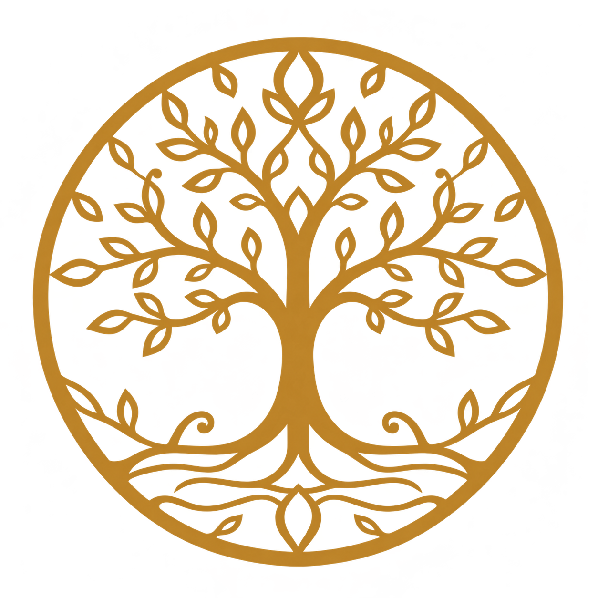
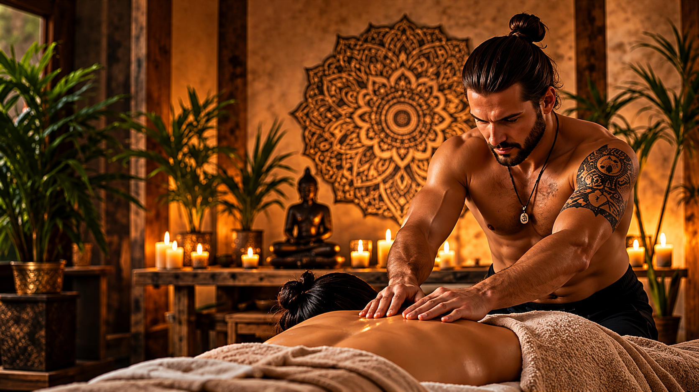
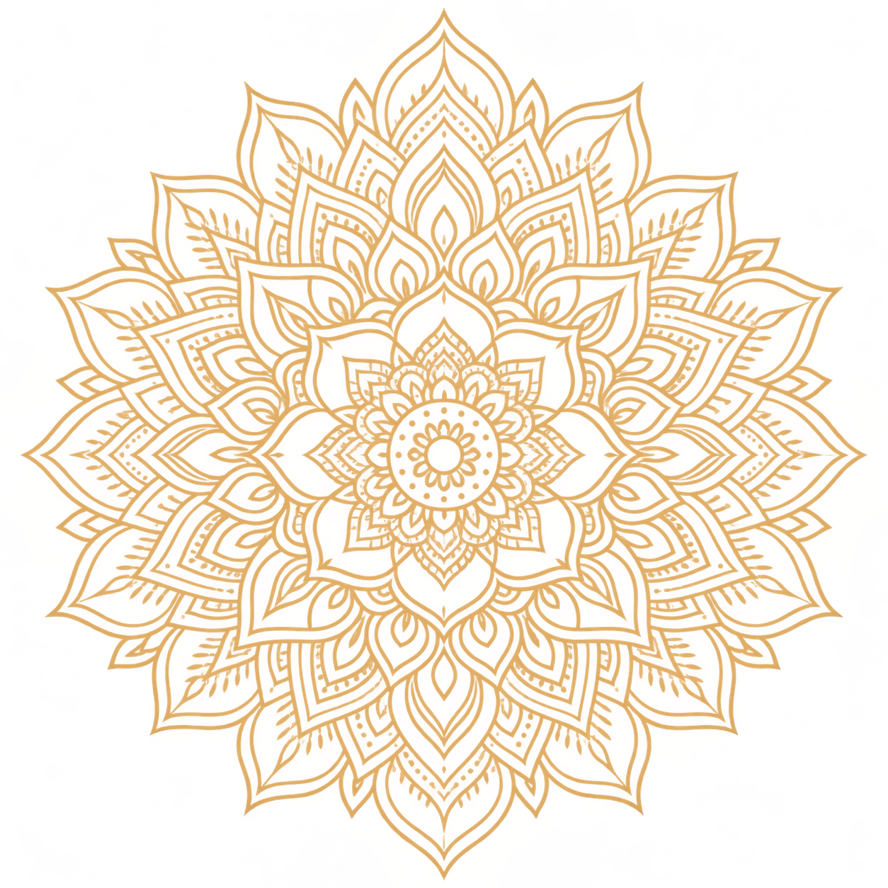
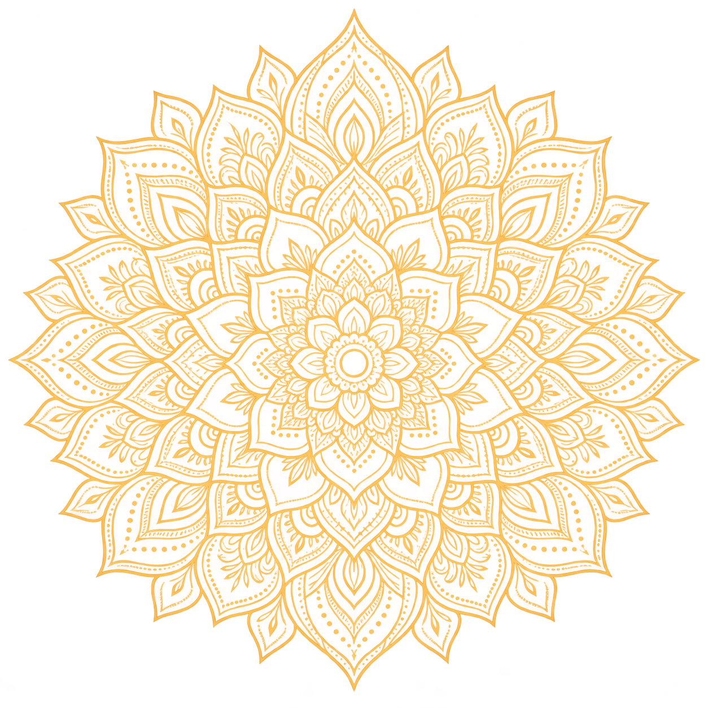
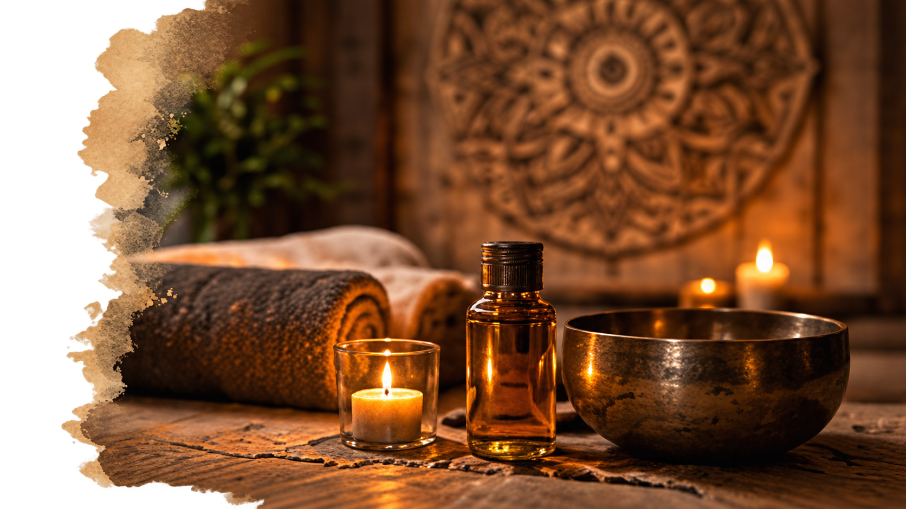
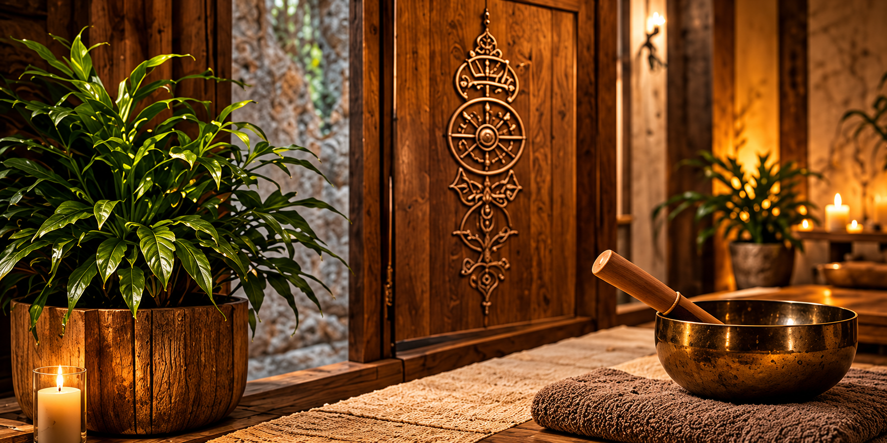

Stresszoldás
Csökkenti a feszültséget, segít elcsendesíteni az elmét.


Testi harmónia, lelki egyensúly.
Engedd el a feszültséget, töltsd fel a tested és a lelked egy holisztikus masszázsélménnyel, amely egy 15 perces vezetett meditációval zárul, hogy a feloldódás teljes legyen.

Rólam
Üdvözöllek. Számomra a masszázs több, mint testi feloldás: út a lelki harmóniához és a belső egyensúlyhoz. Hiszem, hogy a tudatos érintés, a jelenlét és a vezetett meditáció együtt segít visszatalálni önmagadhoz.
Célom, hogy minden vendégem számára olyan élményt nyújtsak, ami túlmutat a hagyományos masszázson — egy holisztikus találkozás a nyugalommal és a belső egyensúllyal.
„A megérintett test emlékszik arra,Útmutatóim
hogy a lélek is otthonra találhat benne.”

Galéria

Szolgáltatás
A svéd masszázs egy klasszikus, mégis rendkívül hatékony módszer a testi és lelki feszültség oldására. Finom, de határozott fogásokkal oldja az izomfeszültséget, serkenti a vérkeringést, csökkenti a stresszt és elősegíti a mély relaxációt.
A kezelés végén egy 15 perces vezetett meditációval zárom az élményt, hogy a tested és az elméd teljes harmóniába kerüljön.
Előnyök és hatások
Csökkenti a feszültséget, segít elcsendesíteni az elmét.
Serkenti a véráramlást, támogatja a szervezet természetes regenerálódását.
Oldja az izomfeszültséget, enyhíti a mindennapi terhelést.
Segít elengedni a mindennapok terhét, és hosszan tartó belső nyugalmat ad.
A masszázst követő meditáció támogatja a belső harmóniát és a tudatosságot.
Visszajelzések

Kapcsolat
Kérdésed van a kezelésről, vagy szeretnél időpontot egyeztetni? Töltsd ki az alábbi űrlapot, és hamarosan válaszolok.